Building the
Branding Center
A business’s brand used to live in a document outside the product, so changing a logo meant redoing every email and landing page by hand. I designed one place to keep the brand, and everything else reads from it. It covers four parts of the product and sixteen teams.
Recorded from the interactive prototype, on demo data. The Thryv AI setup is a concept.
Changing a logo took hours, sometimes weeks
Partners build campaigns for their clients: fifteen or more emails and landing pages in a single campaign. When a client sent a new logo or changed a button color, the partner opened every asset in every automation and redid it by hand.
No way to apply a brand
There was no good way to apply a brand to emails and landing pages, so old assets and the wrong logos kept going out.
Hours to weeks, per client
Partners told us the workaround took anywhere from a few hours to a few weeks for a single client app.
Shared content arrived unbranded
Campaigns shared into a client’s own app showed up with none of that client’s branding.
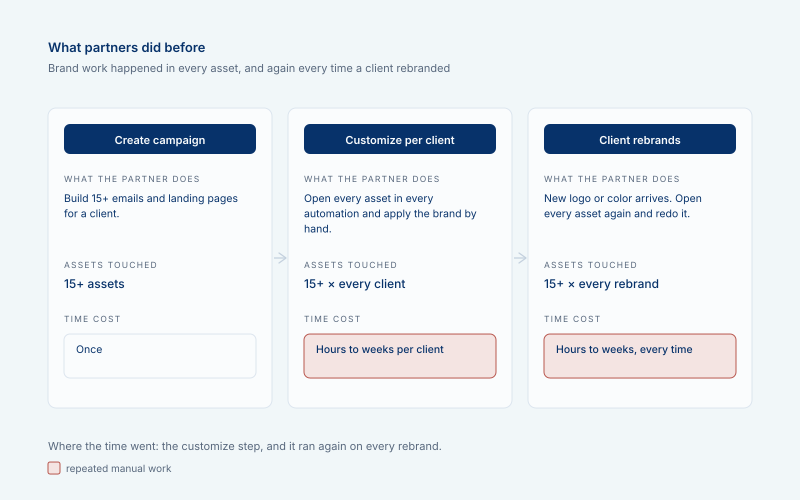
What I owned
I owned the research and the information architecture, and carried the design across four teams and a builder we don’t own.
Ran the research
Thirteen one to one sessions of 45 minutes with partners, onboarding coaches and end users. After that, a competitor audit of five platforms and a concept test before anything got built.
Set the rules
Where brand assets live, what a “primary” logo means, and how one definition reaches every surface that renders it.
Worked across sixteen teams
I pitched connecting the Branding Center to a new landing page builder, and the pitch listed sixteen teams that would depend on it. My two teams built it, and those sixteen use it with our support. My job was keeping one brand definition working for all of them without owning any of them.
Ran the cross team workshop
I ran a workshop with the PM, tech leads, engineers and the content sharing team: current state, future vision, then two rounds of sketching on the same board.
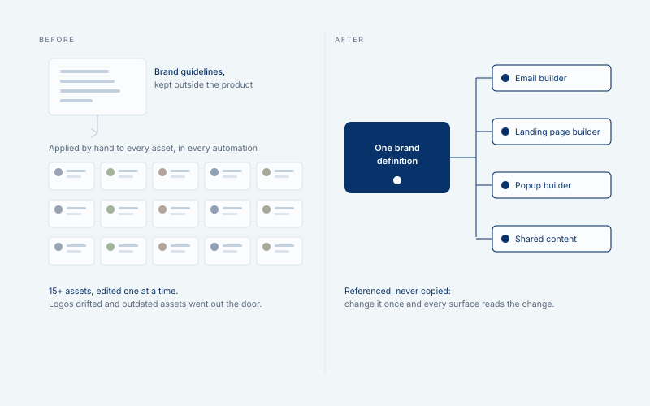
Three rules every surface follows
It looked like a settings page, but the hard part was getting one brand to show up correctly everywhere. So I wrote down three rules that had to hold on every surface, no matter who built it.
Reference, never copy
Surfaces point to the brand asset instead of keeping their own copy, so one change updates it everywhere.
Exactly one primary
One logo is marked primary. That’s the one that goes along when content is shared into someone else’s app.
Degrade to a placeholder
If an asset is missing, the surface shows a placeholder, never another business’s brand.
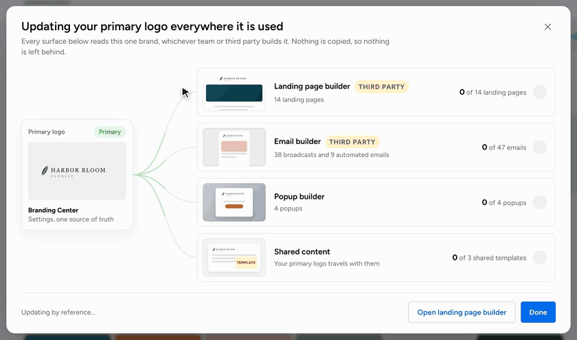
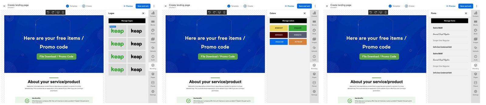
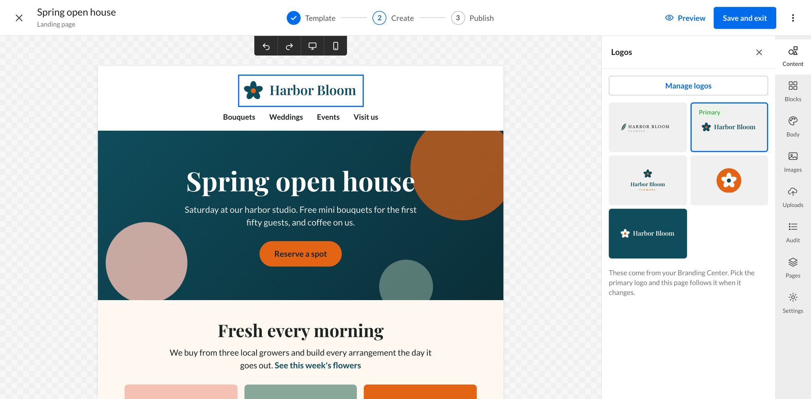
I also designed for what accounts would really look like on day one, not just the happy path: accounts with no logo, and accounts where the existing profile logo didn’t match the new one. That second case is the one that turns into support tickets.
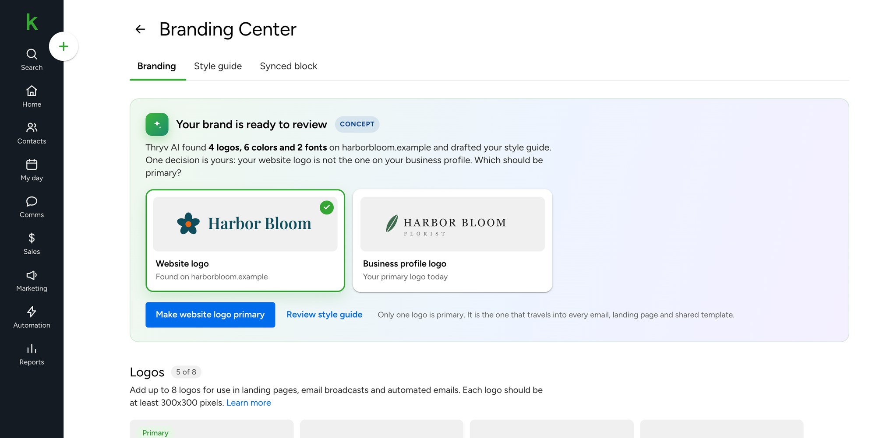
Why I pushed for the slower build
Engineering proposed universal keys with a dependency mapping table instead of raw IDs. It was the slower build, and I pushed for it anyway, because I could show that sharing would need to expand later and raw IDs would have ruled that out. I won that argument on design grounds.
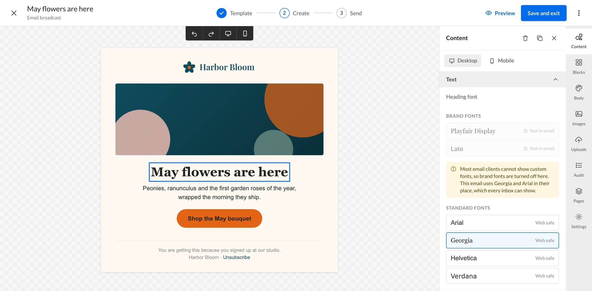

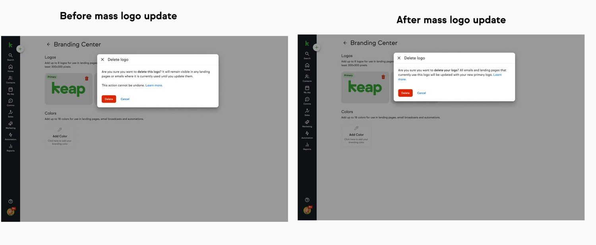
What shipped, and what the usage data showed
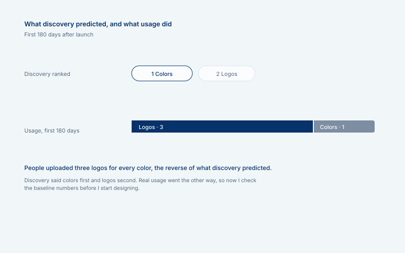
Adoption of the landing page builder rose 20% once brand assets became reusable inside it. Sixteen teams still build on the Branding Center today.
Discovery told me colors mattered most and logos second. Six months after launch, people had uploaded three logos for every color. I took that into my next project: get the baseline numbers before drawing anything.
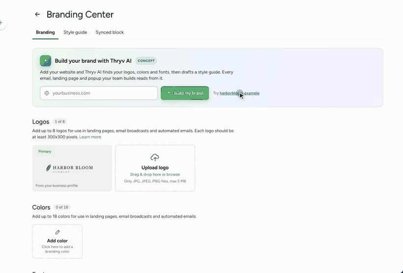
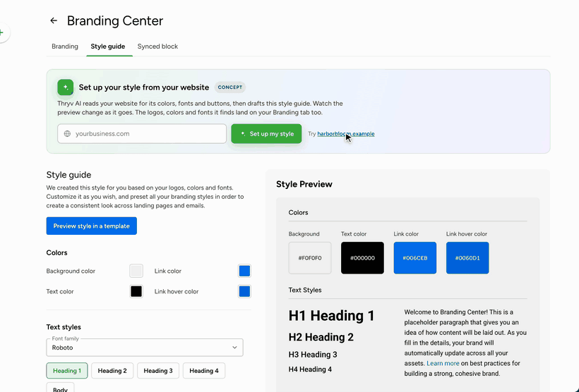